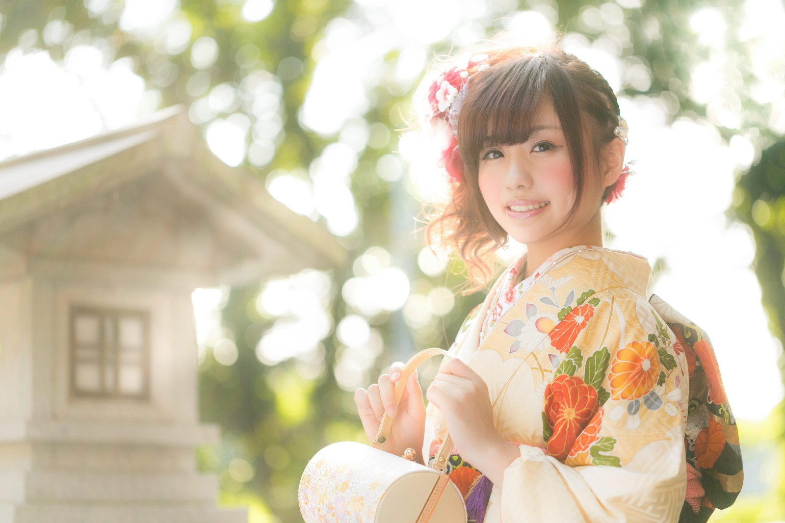

思い出に
創業30年、熊本で地域に愛された写真館です。
振袖のレンタル、着付け、成人式の前撮り行っております。
ナカマチ写真館
創業30年、熊本で生まれた地元で愛されている写真館です。
家族写真の撮影や七五三の撮影、履歴書用の撮影等を主に、
ただいま振袖のレンタル、成人式の前撮りを予約・撮影を行っております。
熊本有数の撮影スタジオ
熊本でも有数の最新の設備と機材が揃っています。
スタジオ数も多く、さまざまなセットでの撮影が可能です。
撮影の流れ
現在コロナ感染防止対策を行いつつ撮影を行っております。
その他、ご不安、ご不明な点があればお気軽にご相談ください。
スタジオ内の撮影はもちろん、外でのロケ撮影も行っております。
スタジオ内撮影の流れ
1.撮影コンセプト等のヒアリングを行います。
2.振袖を選んでいただき専用のヘアスタイリストによるヘアセット・メイクを行います。
3.撮影スタジオに移動し撮影を行います。（1時間〜2時間）
4.撮影後、後日現像したお写真をお送りします。
POINT
屋外撮影の流れ
1.撮影の場所、コンセプト等のヒアリングを行います。
2.屋内スタジオにてお着替えを済ませ撮影場所まで移動します。
3.撮影を行います。（1時間〜3時間）
4.撮影後、後日現像したお写真をお送りします。
POINT
お客様の要望に合わせ
臨機応変な対応を行います。
お客様それぞれの撮影したいイメージやコンセプトに合わせ
実現できるように事前の打ち合わせの際に細かくヒアリングしていきます。
お客様の思い出に残る写真が取れるように臨機応報に対応しています。
ナカマチ写真館の3つの特徴
- 130種類のカスタマイズ可能
- 自分好みの振袖にお着替えいただけます。着付けから、髪型のセットまで当写真館にて可能です。 その他ご要望があれば、事前の打ち合わせの際にてお気軽にご相談ください。
- 複数人での撮影も可能です
- ご友人との思い出に振袖での写真はいかがですか？ セット作りからご一緒に考えて撮影できます。
- セット価格でお得なプラン
- 振袖一式のセットプランをご予約いただけるとお得に撮影いただけます。 また、お客様の事情に合わせ料金の変更も可能です。
よくある質問
また、来店時に手指の消毒、体温チェックのご協力をお願いしております。
スタジオ撮影後は都度換気、消毒を行っております。お客様が安心して撮影できるように徹底して対策して参ります。
その場合、セット料金からは除いてご支払いいただけます。ご安心してご利用ください。その他ご不明な点があればお気軽にご相談ください。
お客様の要望に合わせ、店舗受け取りと配達サービスを行っております。（配達の場合2日かかります。）
お問い合わせ
お気軽にご相談ください
お急ぎの方はお電話にてご連絡ください。
TEL:0120-000-0000